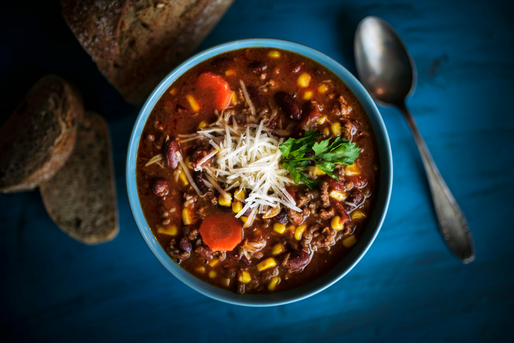

Home
Chili

A bowl of chili resting on a blue table.
Chili, or chili con carne, is a hearty and flavorful dish, often associated with a comforting, warming meal. It is a spicy stew, typically featuring meat, chili peppers (or chili powder), and sometimes beans, onions, garlic, tomatoes, and other spices like cumin.
A bowl of chili presents a warm and inviting dish, full of robust flavors and textures that can be customized to individual preferences and regional traditions.
Ingredients
- 2 tablespoons olive oil
- 1 large onion, chopped
- 2 cloves garlic, minced, or more to taste
- 2 pounds lean ground beef
- 2 (16 ounce) cans kidney beans, rinsed and drained
- 1 (28 ounce) can diced tomatoes
- 1 (15 ounce) can tomatoe puree
- 1 cup water
- 1 (4 ounce) can chopped green chile peppers
- 2 tablespoons mild chili powder
- 2 teaspoons salt
- 2 teaspoons ground cumin
- 1 teaspoon ground black pepper
Steps
- Heat oil in a large skillet over medium-low heat. Add onion and garlic; cook and stir until onion is translucent,
about 5 minutes. Add ground beef; cook and stir until browned, 8 to 10 minutes.
- Transfer beef mixture to a 6-quart slow cooker. Stir in kidney beans, diced tomatoes, tomato puree, water, green chile peppers,
chili powder, salt, cumin, and black pepper.
- Cook on Low until flavors combine, 4 to 6 hours.